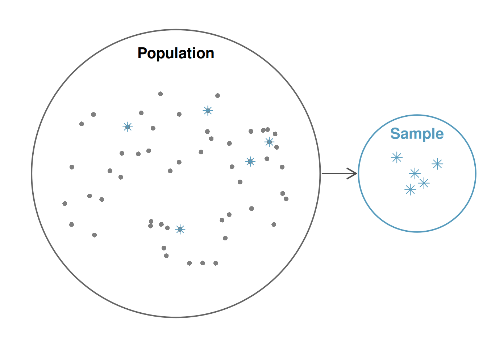
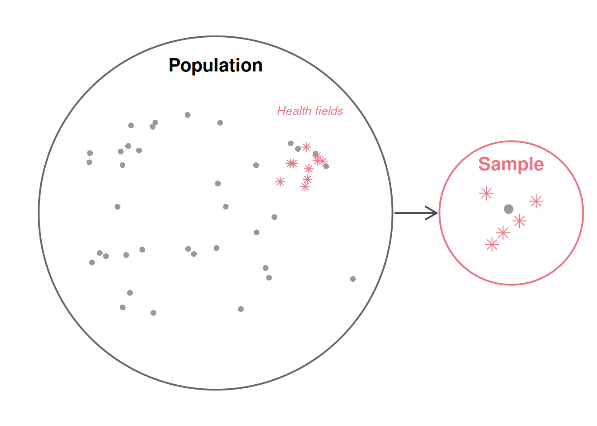
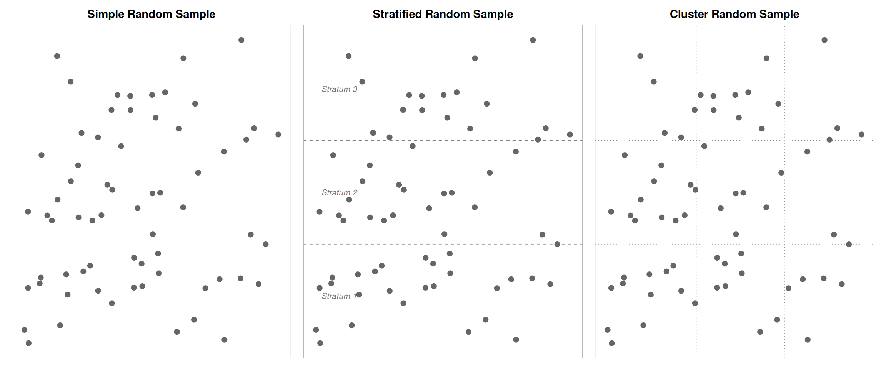
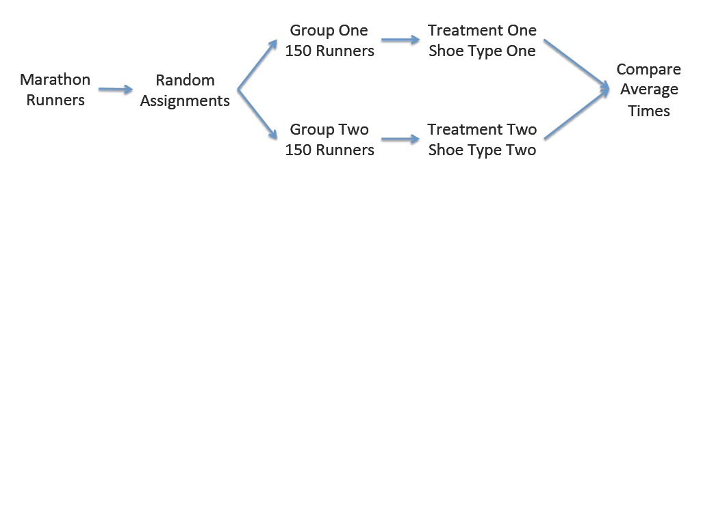
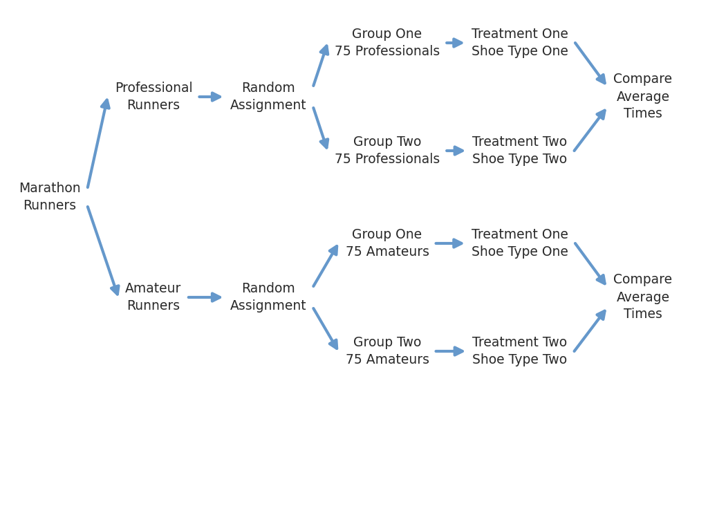
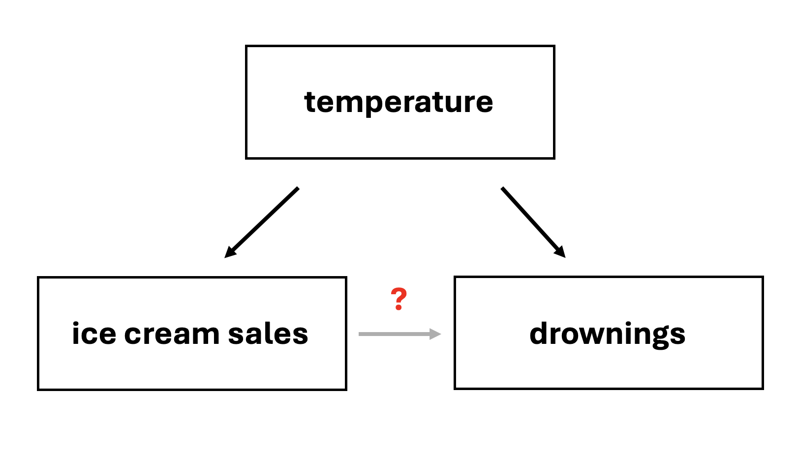

1.2 Data Collection and Study Design
Before digging into the details of working with data, we pause to think about how data come to be. If data are to be used to draw broad conclusions, then it is important to understand who or what the data represent. One important aspect is sampling — knowing how the observational units were selected from a larger group allows us to generalize back to the population from which the data were drawn. Additionally, by understanding the structure of the study, we can separate causal relationships from mere associations. A good question to ask before analyzing any dataset is: How were these observations collected? You will learn a lot about the data by understanding its source.
Key Concepts
- Distinguish between a sample and a population
- Recognize when it is appropriate to use sample data to make inferences about the population
- Critically examine the way a sample is selected, identifying possible sources of bias
- Recognize that random sampling is a powerful way to avoid sampling bias
- Identify other potential sources of bias that may arise in studies on humans
- Distinguish between an observational study and a randomized experiment
- Recognize that only randomized experiments can lead to claims of causation
- Distinguish between a randomized comparative experiment and a matched pairs experiment
- Identify potential confounding variables in a study
Motivation
A state in the upper Midwest is currently considering a bill that would provide amnesty to underage persons who call for help from the authorities with an overly intoxicated person. One of the state senators who represents a district that contains a university is hesitant to initially support the bill, so she has commissioned a study to learn about how the residents of her district feel about the bill. The senator will select from one of the three study options.
Study 1: “Would you support a bill that prevents authorities from giving a ticket to an underage person who has asked for help with an overly intoxicated person?” Participants would be recruited by purchasing ads on the local radio stations.
Study 2: “Would you support a bill that has the potential to allow underage people to drink with no fear of retribution?” Participants would be a random sample of all taxpayers in the district gathered by door-to-door interviews.
Study 3: “Would you support a bill that helps reduce the chances of undergraduate death due to alcohol poisoning by guaranteeing that underage people who request emergency medical assistance for someone who is very intoxicated will not receive disciplinary sanctions from the university?” Participants would be a random sample of all property owners in the district contacted to fill out a survey via email.
- Rank the three studies based on the question they ask. Briefly justify your ranking.
- Rank the three studies based on the sampling method. Briefly justify your ranking.
- If you could mix the questions and sampling methods, which combination do you think would be the best?
Populations and Samples
A population includes all individuals or objects of interest.
A census occurs when every case in the population is measured.
The sampling frame is a list of the names of all subjects or objects in the population.
Data are collected from a sample, which is a subset of the population.
Statistical inference is the process of using data from a sample to gain information about the population.
The first step in conducting research is to identify the question to be investigated. A clearly stated research question helps identify what subjects or cases should be studied and what variables are important, or the population. It is also important to consider how data are collected so that they are reliable and help achieve the research goals.
One way we could find an answer is to look at every case by taking a census. However, most of the time this is not feasible. Taking a census could take months and is often very costly. Sometimes items are destroyed in the sampling process, such as measuring the tensile strength of a wire or the length of life of a light bulb or battery. Collecting a census in these cases would be foolish. So, most of the time, researchers take a sample from the population and use what they find from the sample to describe the population
In order to make sure that all units in the population are included, a sampling frame is compiled and used to select the subjects for the sample. This process of using a sample to describe the population is called statistical inference, and the accuracy of the inference can be greatly impacted by the quality of the sample and how well the sample reflects the characteristics of the population.
Class Example 1.2.1: Population Identification
For the following research questions, identify the target population and what represents an individual case
- What is the average mercury content in swordfish in the Atlantic Ocean?
- Over the last five years, what is the average time to complete a degree for UW–La Crosse undergrads?
- Does a new drug reduce the number of deaths in patients with severe heart disease?
Parameters and Statistics
A parameter is a number that describes a population and is almost always unknown.
A statistic is a number that describes a sample and is almost always known.
In most statistical analyses, the research question boils down to understanding a numerical summary — perhaps a quantity you already know (like the average) or one you will learn about in this course.
A numerical summary can be calculated on either the sample, called a sample statistic, or the entire population, called a population parameter. However, measuring every unit in the population is usually impossible. So we calculate the summary from a sample and use it to estimate the corresponding population value.
Class Example 1.2.2: Parameter and Statistic Idenification
For the following research questions, identify the population parameter and the sample statistic.
- A sample of 60 swordfish have an average of 0.97 ppm
- An average of 4.37 years is reported from 25 UWL students as the time to complete their degree.
- After 1000 patients started taking a new drug for severe heart disease, 28% were reported to have died within 5 years.
Sampling from a Population
We might try to estimate the time to graduation for UW–La Crosse undergraduates by collecting a sample of graduates. All graduates in the last five years represent the population, and graduates who are selected for review are collectively called the sample. In general, we always seek to randomly select a sample from a population. The most basic type of random selection is equivalent to how raffles are conducted. For example, we could write each graduate’s name on a raffle ticket and draw 10 tickets. The selected names would represent a random sample of 10 graduates.

If we ask a student who happens to be majoring in nutrition to select several graduates for the study, they might pick a disproportionate number of graduates from health-related fields. When selecting samples by hand, we run the risk of picking a biased sample, even if our bias is unintentional.
Bias occurs when the results from the sample differ from the population.

If someone is permitted to pick and choose exactly which individuals are included in the sample, it is entirely possible that the sample will overrepresent that person’s interests — even if the bias is unintentional. Sampling randomly helps address this problem.
Response bias is the tendency for people to not answer questions honestly.
Non-response bias occurs when the response rate is very low.
Undercoverage occurs when part of the population is not considered for inclusion in the sample.
The act of taking a simple random sample helps minimize bias. However, bias can crop up in other ways. For example, asking sensitive questions may result in response bias because participants do not feel comfortable answering the question truthfully. If a lot of people do not respond to a survey, it will suffer from non-response bias. Finally, if the population from which the sample is drawn excludes groups of people, then the sample will suffer from undercoverage.
Class Example 1.2.3: Wording bias
A survey is to be conducted using a random sample of citizens in a town, asking them if they support raising taxes to increase funding for the public school.
- Write the question in a way that is likely to bias the results toward more yes answers.
- Write the question in a way that is likely to bias the results toward more no answers.
Sampling Methods
Good Ways to Obtain a Sample
A simple random sample is obtained when every sample of a given size is equally likely to be the one selected.
Stratified random sampling occurs when the population is divided into homogeneous, non-overlapping groups (called strata) and a simple random sample is selected from each group.
There are a number of appropriate ways to randomly select your sample. The most basic type of sampling is the simple random sample (SRS). Taking a SRS avoids sampling bias and tends to produce a good representaitive sample of the population. However, there are many times when we can’t conduct a simple random sample. Stratified random sampling occurs when the population is divided into homogeneous, non-overlapping groups (called strata) and a simple random sample is selected from each group. Cluster random sampling occurs when the population is divided into many non-overlapping groups (called clusters), a simple random sample of clusters is obtained, and data is collected from every case in the cluster.
Cluster random sampling divides the population into many non-overlapping groups (called clusters), randomly selects a subset of clusters, and collects data from every case in the cluster.

Class Example 1.2.4: Picking a good sampling method
Which type of sampling method is most appropriate in the following scenarios?
- Researchers want to test a new math curriculum for third graders. They only have the budget to try the curriculum in 10 elementary schools.
- Processor chips are continuously manufactured at a production plant. To ensure that they meet size specifications so that they will fit inside an iPhone, manufacturers want to test 100 chips throughout the day.
- A player’s agent wants to know the average salary for each position of major league baseball.
The table below summarizes the key features of each sampling method:
| Method | How it works | Best used when… |
|---|---|---|
| SRS | Every case has an equal chance of selection | Population is relatively homogeneous and accessible |
| Stratified | Divide into similar groups (strata), then SRS within each | Known subgroups differ on the outcome of interest |
| Cluster | Randomly select entire groups (clusters) | Clusters are internally diverse but similar to each other; travel/cost is a concern |
| Multistage | Randomly select clusters, then SRS within each | Same as cluster, but clusters are large |
Random sampling caution: Random is not the same as haphazard. We cannot obtain a random sample by haphazardly picking a sample on our own. We must use a formal random sampling method such as technology or drawing names out of a hat.
Class Activity: Sampling from Gettysburg Address Worksheet
Bad Ways to Take a Sample
Sampling bias occurs when the sample does not accurately represent the population of interest.
Voluntary response sampling occurs when a researcher asks people to volunteer to be participants instead of randomly selecting possible participants.
Convenience sampling happens when a researcher just uses the most convenient group as a sample.
Without a random sample, we may encounter sampling bias which occurs when the sample does not accurately represent the population of interest. One common sampling technique that will nearly always be biased is voluntary response sampling. With this kind of sampling, a researcher asks people to volunteer to be a part of a study. Another common type of sampling that produces biased results is the convenience sample. In a convenience sample, a researcher simply uses the most convenient group available as the sample.
Class Example 1.2.5: Driving with a pet on your lap
Over 30,000 people participated in an online poll on cnn.com conducted in April 2012 asking “Have you ever driven with a pet on your lap?” We see that 34% of the particpants answered yes and 66% answered no.
- What is the sample?
- Is the variable in this study quantitative or categorical?
- Can we conclude that 34% of all drivers have driven with a pet on their lap?
- Explain why is not appropriate to generalize these results to all drivers, or even to all drivers who visit cnn.com. What is the problem with this method of data collection?
Experiments
In an experiment the researcher actively controls one or more of the explanatory variables.
In a randomized experiment the value of the explanatory variable for each unit is determined randomly, before the response variable is measured.
Well-designed experiments incorporate four key principles:
Controlling. Researchers assign treatments to cases and do their best to control any other differences between the groups. For example, when patients take a drug in pill form, some patients might take the pill with a sip of water while others drink a full glass. To control for the effect of water consumption, a doctor might instruct every patient to drink a 12-ounce glass of water with the pill.
Randomization. Researchers randomly assign subjects to treatment groups to account for variables that cannot be controlled. For example, some patients may be more susceptible to a disease than others due to their dietary habits. Randomly assigning patients to treatment or control groups helps even out such differences across groups.
Replication. The more cases researchers observe, the more accurately they can estimate the effect of the explanatory variable on the response. In a single study, we replicate by collecting a sufficiently large sample. At a minimum, we want multiple subjects per treatment group. Replication also refers to repeating an entire study to verify earlier findings. (The replication crisis refers to the ongoing problem in several scientific disciplines where past findings have failed to be replicated in new studies.)
Blocking. Researchers sometimes know or suspect that variables other than the treatment influence the response. They may first group individuals based on this variable into blocks and then randomize cases within each block to the treatment groups. For instance, in studying the effect of a drug on heart attacks, researchers might first split patients into low-risk and high-risk blocks, then randomly assign half the patients from each block to the treatment and half to the control group.
To demonstrate the differences between some of the more commonly used experimental designs, consider the following study. A running shoe company wants to know if the type of shoe impacts the speed of runners. One aspect of the shoe that they are considering is the heel-toe drop, or the difference in height between the heel of the shoe to the toe of the shoe. Minimalist shoes reduce the heel-toe drop to 0 – 4 mm, whereas a more traditional shoe has an 8 – 12 mm heel-toe drop. This company wants to know if a lower heel-toe drop will cause runners to run more quickly, so they recruit 100 marathon runners of varying ability. For the study, the runner will run 5k, and their time will be used to establish their pace.
Randomized comparative design
In a randomized comparative design, we randomly assign cases to different treatment groups and then compare results on the response variable(s).
In a randomized comparative design, we take all the participants in the study and randomize them to a different treatment group.

Block design
In a block design, cases are first split into groups (called blocks), and within each group the value of the explanatory variable for each unit is determined randomly.
In a block design, we first group participants by some logical grouping that we think might have an impact on the response in addition to the variable we are studying.

Class Example 1.2.6: Picking the blocking factor
Why might it make sense to group the runners into professionals vs amateurs?
Matched pairs design
In a matched pairs design, cases get both treatments (or cases are paired) and we examine differences in the response between the two treatments.
In a matched pairs design, each participant is assigned to each of two treatment settings, responses are measured for each treatment, and the differences in responses are computed for each participant. Because two measurements are obtained for each individual, the measurements are dependent upon each other. The two treatments often come in the form of “Before vs. After” or “Method A vs. Method B.” In the “Method A vs. Method B” type of pairing, it is important to randomize the order of the treatments to avoid a confounding order effect.
Class Example 1.2.7: Describing the matched pairs running shoe experiment
Thinking about the matched pairs design for the experiment about running shoes
- What are the variables in the study? Are they categorical or quantitative?
- What are the explanatory and response variables?
- Explain how the treatments would be assigned.
- Why might a matched pairs design be beneficial in this experiment?
Reducing Bias in Human Experiments
The control group does not receive a treatment.
A placebo is a fake treatment that is designed to look like the treatment but has no therapeutic value.
In a single-blind study, participants do not know if they are in the treatment or control group.
For an experiment, it is important to be able to determine if the treatment actually is making a difference, or if we are seeing results that would have happened regardless of the treatment. The purpose of a control group is to establish what we would expect to happen regardless of the treatment. Often times, in order to make sure that people adhere to the study guidelines, we use a placebo that is designed to look like the treatment.
In a double-blind study, neither the participants nor the people interacting with the participants knows if they are in the treatment or control group.
The placebo makes it much easier to conduct single-blinded experiments or double-blinded experiments. Not all randomized experiments make use of control groups, placebos, or blinding; however, in studies involving humans, these techniques are often used to help make effective comparisons between groups.
Class Example 1.2.8: Depression and Prozac
Researchers at a prominent Midwestern university would like to determine if Prozac is effective in reducing depression as determined by patient responses to a questionnaire. The researchers recruited 50 individuals suffering from depression. Describe a completely randomized double-blind experiment using a placebo to test this association is a causal association.
Confounding Variables
A confounding variable is a third variable that is associated with both the explanatory and response variable, but not necessarily of interest in the study.
A confounding variables is a variable that is associated with both the explanatory variable and the response variable. Because of this dual association, a confoudning variable makes it impossible to determine whether the explantory variable truly caused the observed response.
Consider a classic example: ice cream sales and drowning rates both increase during summer months. If we looked only at the association between ice cream sales and drownings, we might (absurdly) conclude that ice cream causes drowning. The confounding variable is temperature (or season) — warm weather drives both increased ice cream consumption and increased swimming, which leads to more drowning incidents.

Summary
In this chapter, we explored how data are collected and why the method of collection matters for the conclusions we can draw.
Key concepts:
The population is the entire group of interest; a sample is a subset from which we collect data. A census collects data on every member of the population but is usually impractical.
Good sampling methods include simple random sampling (SRS), stratified sampling, and cluster sampling. Each has advantages depending on the population’s structure and practical constraints.
Bias can enter through non-random sampling (selection bias), non-response, or convenience sampling.
In an experiment, researchers actively assign treatments to subjects. In an observational study, researchers simply observe without intervening.
Confounding variables are associated with both the explanatory and response variables and can create misleading associations.
Blinding (single and double) and placebos help reduce bias in human experiments.